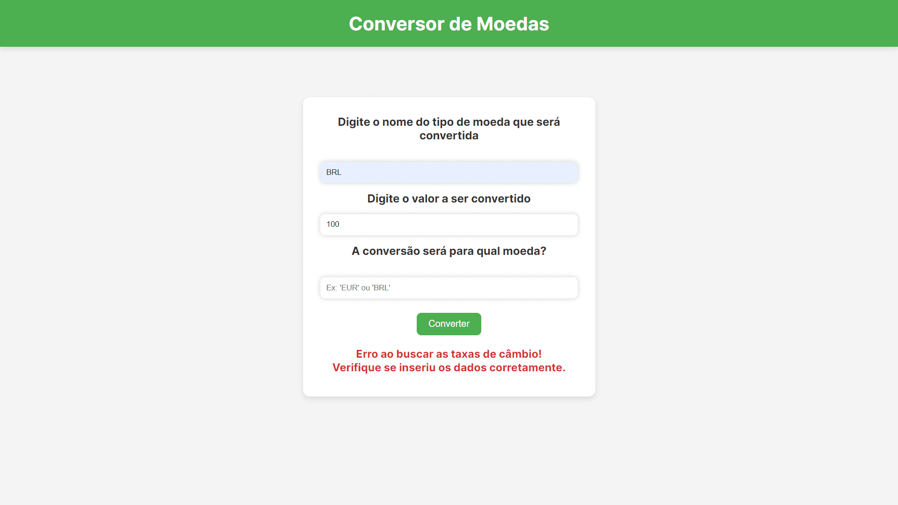
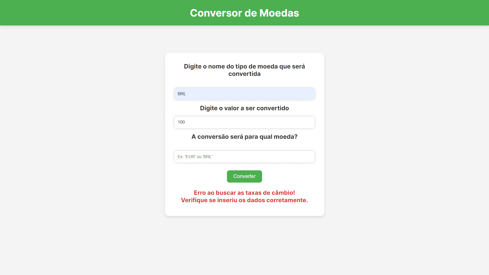

Fabiano Júnior Lima Barbosa
Sobre Mim
Olá! Meu nome é Fabiano Júnior Lima Barbosa. Sou um jovem programador brasileiro, sempre disposto a aprender mais.
Sempre gostei da área de tecnologia. Desde os meus 12 anos, estava em contato com a programação através dos meus projetos com Arduino.
Atuo na área há 2 anos. Estou cursando o 2° ano do curso de Informática Integrada ao Ensino Médio no Instituto Federal do Norte de Minas Gerais, Campus Almenara.
Eu uso Arch Linux :]
Minhas Habilidades
Habilidades em Design de Interfaces Web, Design Responsivo, UI/UX Design (Design de Interface e Experiência do Usuário) e Design de Navegação.
Possuo experiência com o uso do Firebase (Storage, Realtime Database e Autenticação).
Possuo bom nível de habilidade em programação com JavaScript.
Níveis de Habilidade
JavaScript
HTML5
CSS3
Artes de Gleiciane Lima
Este site foi feito em um projeto da matéria de POO (Programação Orientada a Objetos) no meu curso técnico, onde era necessário criar um site para um cliente real.
Ele apresenta os trabalhos e a carreira da minha cliente. Ela, ao acessar com uma conta Admin, poderá realizar a postagem de Fotos ou Vídeos com uma descrição na sua galeria, onde os dados e os arquivos serão armazenados no Firebase Realtime Database e no Firebase Storage, respectivamente.
O site conta com uma aba de encomendas, onde, após o cliente preencher e enviar o formulário, todos os dados do pedido serão enviados para o e-mail dela, com o auxílio da API EmailJS.
Acesse o site aqui: Artes de Gleiciane Lima
Conversor de Moedas
Este site foi um projeto pequeno de estudo em lógica de programação e implementação de APIs.
Nele o usuário insere a moeda que será convertida, o valor de conversão e a moeda para qual será convertida.
O câmbio em tempo real de cada moeda tem como fonte os dados da API Open Exchange Rates, implementada ao site.
Acesse o site aqui: Conversor de Moedas

 
